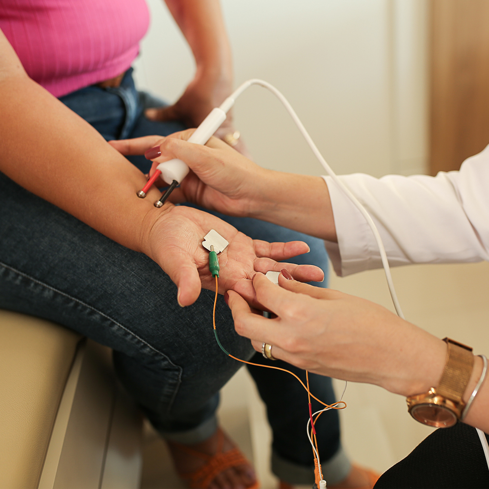

ELETRONEUROMIOGRAFIA
ELETRONEUROMIOGRAFIA
Para que serve a Eletroneuromiografia?
O estudo eletroneuromiográfico tem um papel essencial para o diagnóstico das doenças que afetam o sistema neuromuscular.
Nós nos utilizamos da capacidade que o nervo e o músculo têm de gerar potenciais de ação elétricos fisiológicos para avaliar a função do sistema nervoso periférico.

PROCEDIMENTO
Como o exame é realizado?
O exame é feito por um médico neurofisiologista clínico, que avalia a condução nervosa e a atividade muscular por meio de estímulos elétricos. Os eletrodos são colocados na pele do paciente e registram a atividade elétrica em diversos músculos e nervos. O procedimento, sem necessidade de sedação ou anestesia, pode realizar os seguintes estudos:
• Eletroneuromiografia de membros superiores;
• Eletroneuromiografia de membros inferiores;
• Eletroneuromiografia de face;
• Eletroneuromiografia de segmento complementar (ex.: músculos paravertebrais);
• Eletroneuromiografia de segmento especial (ex.: região bulbar, língua, etc);
• Estudo do tremor;
• Teste de estimulação nervosa repetitiva.
DOENÇAS QUE PODEM SER DIAGNOSTICADAS
Síndrome de hiperexcitabilidade periférica:
• Doença de Isaacs;
• Síndrome de fasciculações benignas;
• Síndrome da pessoa rígida.
Doenças da junção neuromuscular:
• Miastenia gravis;
• Lambert-Eaton;
• Botulismo.
Miopatias (doenças do músculo)
• Miopatias inflamatórias, miopatias hereditárias, miopatias congênitas distrofias musculares;
• Síndromes miotônicas distróficas e não distróficas;
• Doenças do neurônio motor: esclerose lateral amiotrófica; atrofia muscular espinhal, entre outras.
Afecção das raízes espinhais:
• Compressão das raízes espinhais por doença degenerativa da coluna;
• Radiculopatias inflamatórias;
• Infiltração neoplásica das raízes espinhais.
Plexopatias:
• Infiltração do plexobraquial por neoplasias;
• Síndrome de Parsonage-Turner;
• Radiculoplexopatia diabética (síndrome de Bruns-Garland);
• Plexopatia actínica.
Neuropatias periféricas:
Neuropatias hereditárias, tóxicas, diabéticas, inflamatórias (síndrome de Guillain- Barré, Polirradiculopatia Inflamatória Desmielinizante Crônica).
COMO SE PREPARAR PARA O EXAME?
-
Traga seus Shorts e/ou Camiseta
Traga short (para exames de membros inferiores) ou camiseta (para exame de membros superiores)
-
Venha com as extremidades aquecidas
Venha com as extremidades aquecidas (durante tempo frio preferir roupas quentes, evite ficar por tempo prolongado em ambientes com ar condicionado antes do exame)
-
Evite passar creme ou substância oleosa no corpo
Nao passe creme ou substâncias oleosas no corpo
-
Se utiliza marca-passo, comunique
Comunique SEMPRE (e com antecedência) se for portador de marca-passo
-
Comunique se é Portador de Necessidades Especiais
Comunique com antecedência se é portador de alguma necessidade especial (acamado, cadeira de rodas) para melhor adequação do ambiente para atendê-lo
-
Em geral, medicações de uso habitual não precisam ser suspensas
Medicações de uso habitual em geral não precisam ser suspensas (exceto Mestinon para pacientes com Miastenia Gravis).
-
Comunique se usa algum anticoagulante
Comunicar uso de anticoagulante.
Vamos fazer o exame?
Faça o agendamento da sua consulta utilizando nosso Agendamento 24h:
Agendar Exame